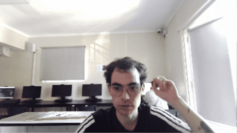

Francisco Arturo Benavides Riquelme
Bitacora
Página web
Primero hicimos una página web en GitHub y fuimos aprendiendo poco a poco cómo utilizar el programa; esta fue la página que hice yo.
Ver mi páginaTouch Designer
Experimentacion
Luego hicimos ejercicios en Touch Designer, un programa de edición de video, y estos fueron algunos de mis resultados.
Este resultado fue la base para mi proyecto final, donde llevé esas pruebas a una idea más compleja y expresiva.
Exploré la distorsión visual, la interferencia y la percepción de la realidad.
A partir de estas pruebas, desarrollé una propuesta más clara y más intensa.
Descargar archivo TouchInteligencia artificial
Experimentación con IA
Imágenes generadas
Luego usamos Comfy para generar imágenes con IA; aquí están mis resultados.
Ver resultadosResultado final
Touch Designer
Vídeo distorsionado
Luego de mucho esfuerzo y sudor, llegué al resultado final: un video distorsionado con audio, el cual trata sobre un ser humano con locura hablando locura; el video se ve interferido para que sus locuras no puedan ser transmitidas, haciendo como si el loco tuviera la razón y una tecnología superior lo estudiara, silenciando esta idea. Esta obra se relaciona con mi investigación de este año, donde exploro la alteración de la verdad y la modificación de los relatos, siendo vistos desde distintos puntos de vista. En este caso, la obra se ve desde el punto de vista del «locuto» que cree que tiene la razón.
Bitácora